In order to morph to faces, two processes are required- warping an image's shape and then cross-dissolving the colors.
I first selected correspondance points for each image, matching feature to feature. From there, I used a Delauney triangulation to create triangles inbetween each point to speed up computation of each new coordinate. With each triangle, I then warped the coordinates using an affine transformation to the new image and used interpolation to get the color values for the new image.
To cross dissolve colors of the images, the following equation was used: image = (1-t)im1 + (t)im2, where t is a value from [0, 1] controlling how close the morphed image is to image 1 or 2.
I first computed the "average" shape, or the correspondance points in between im1 and im2, and created an average image.
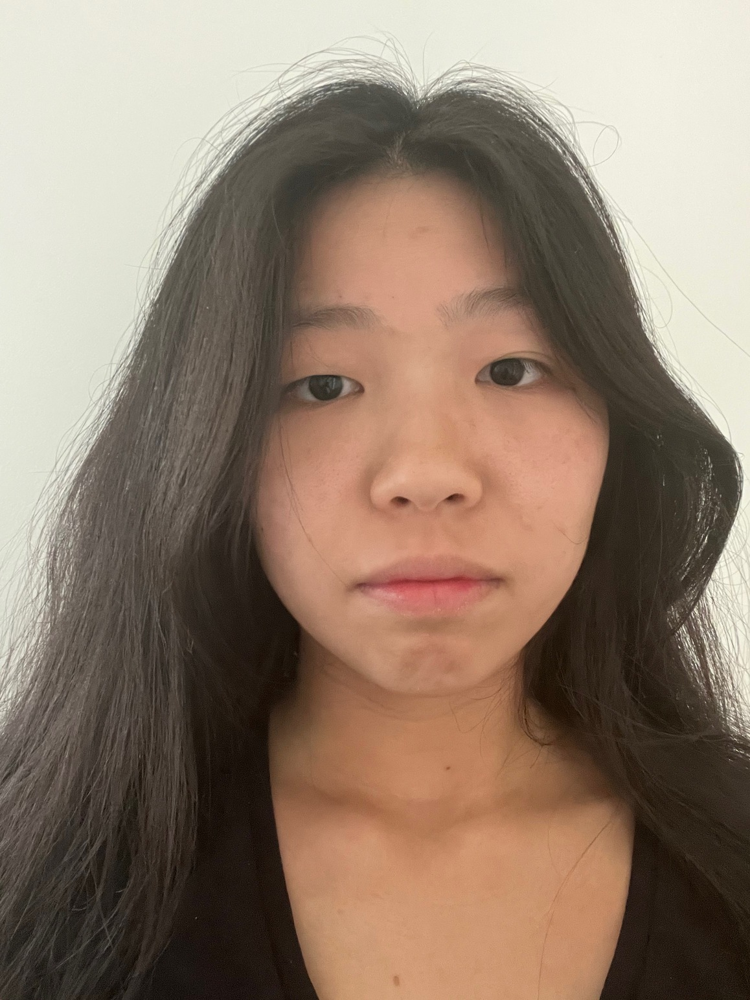
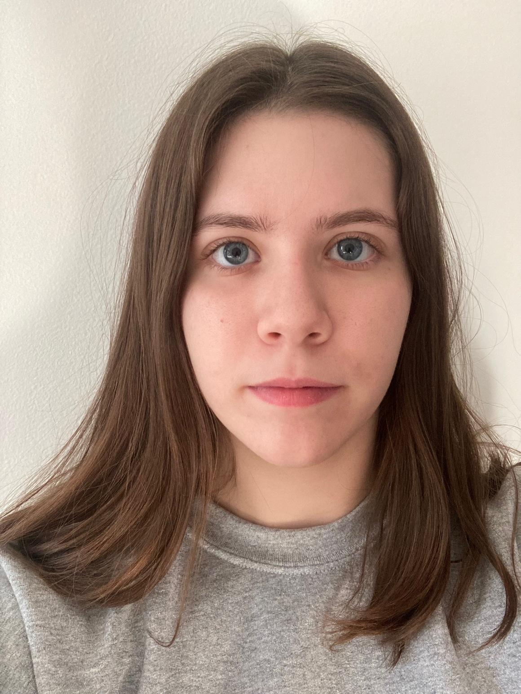
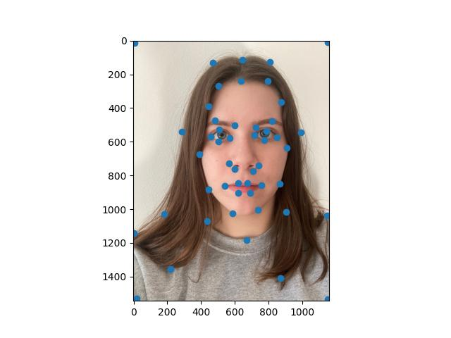
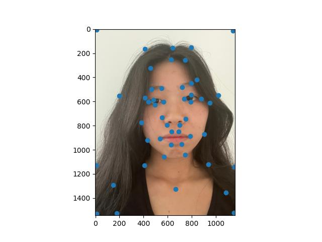
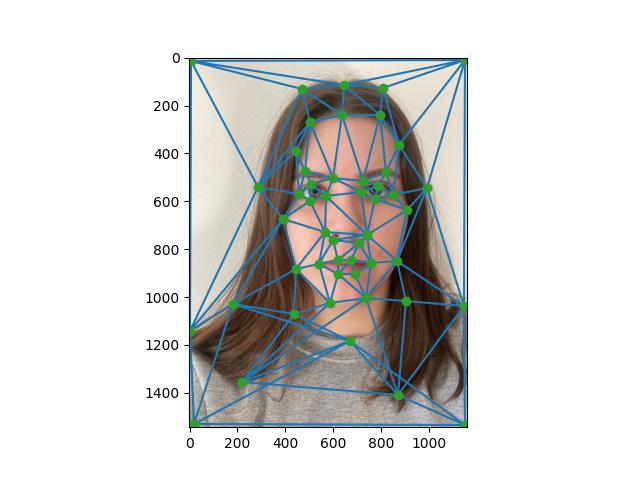
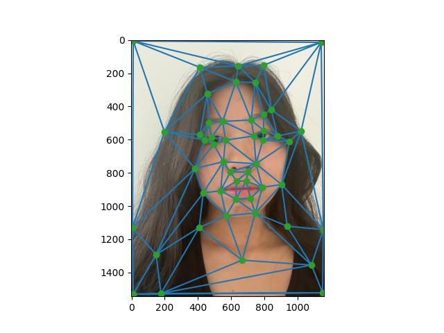
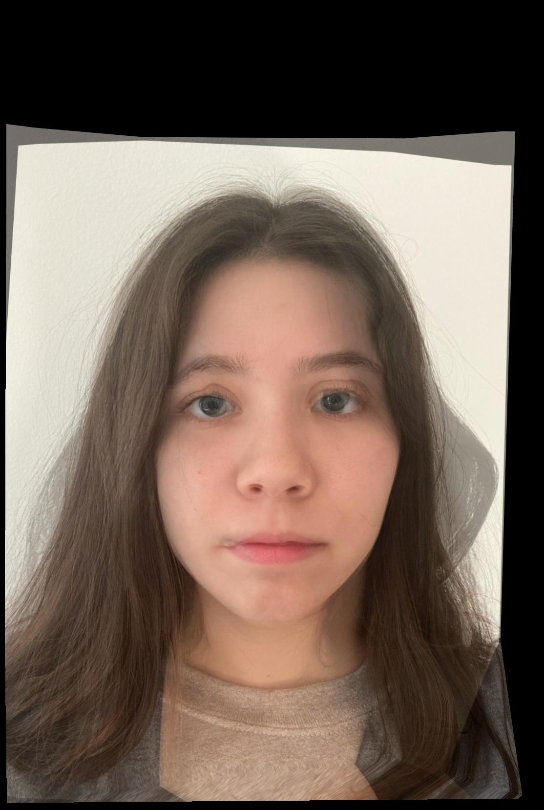
After taking the halfway point, I compiled all the images from t = 0 to t = 1.
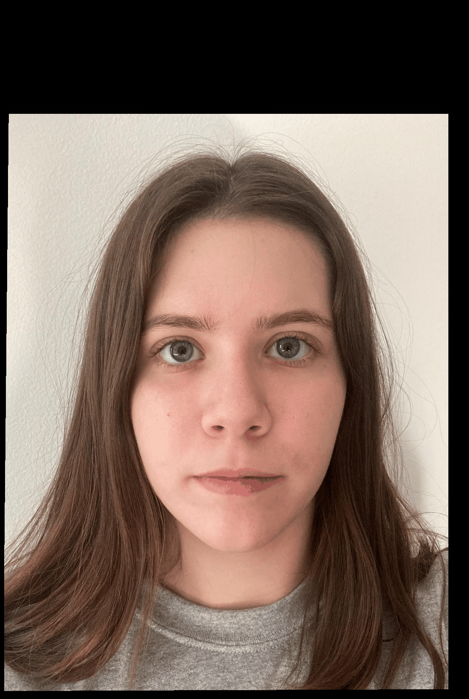
Using the Danes database of faces, I averaged 40 faces together to create an average population face. Because the images were not completely aligned, the edges appear blurry.
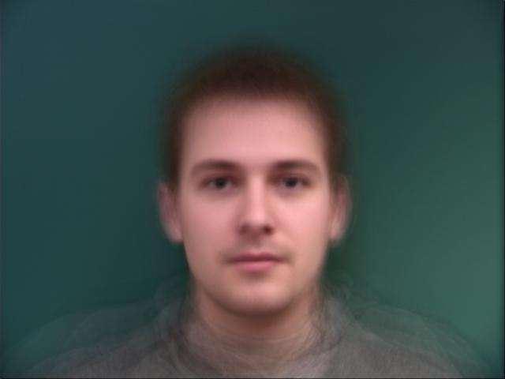
I then morphed some of the faces in the dataset into the average face shape calculated earlier.
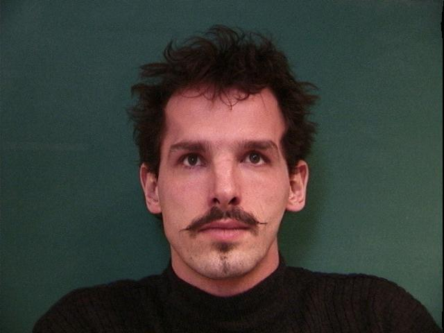
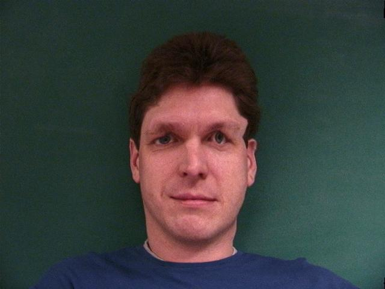
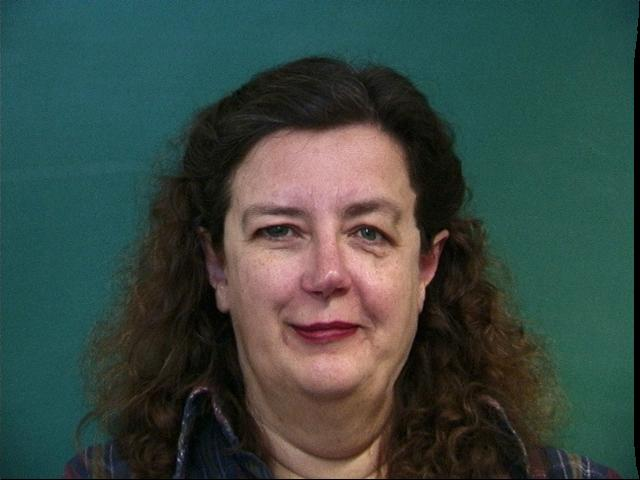
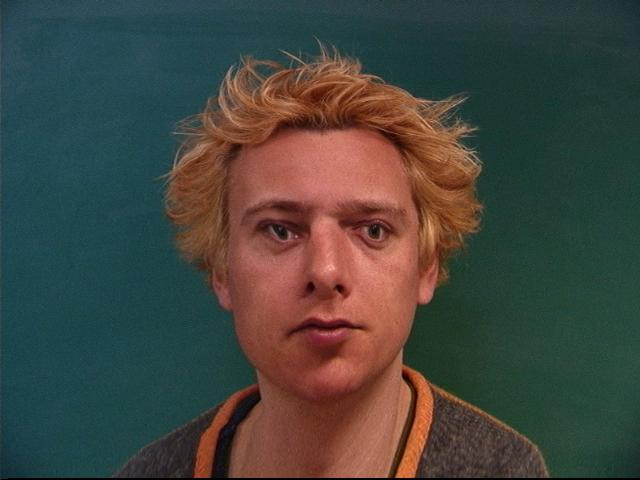
I also morphed my face onto this average shape. My image was not aligned with the other faces, resulting in the background noise.
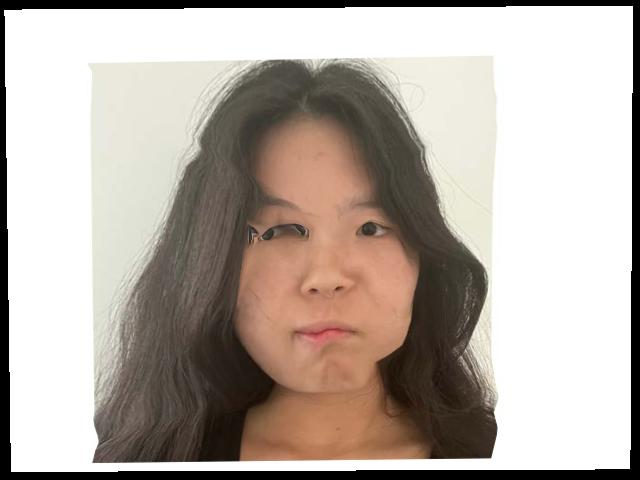
Caricatures are exaggerated features on an individual. To find what parts of my face were exaggerated, I subtracted my face shape from the average, and added it back to create a caricature.
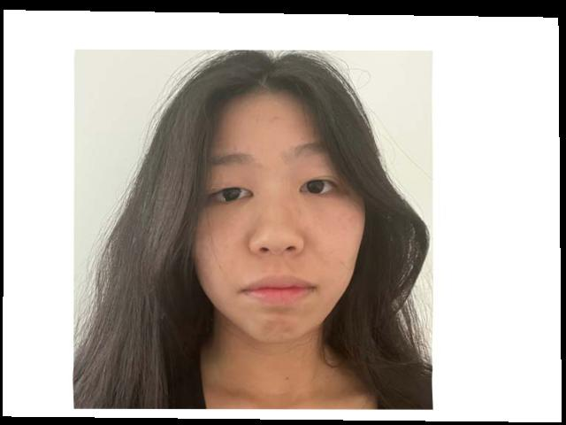
Using the average face of the kpop boy group Seventeen from the internet, I morphed my face onto it, with just the color, just the shape, and both.
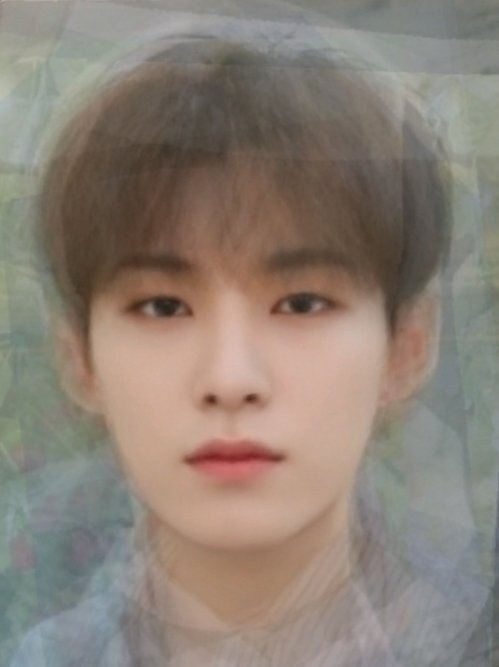
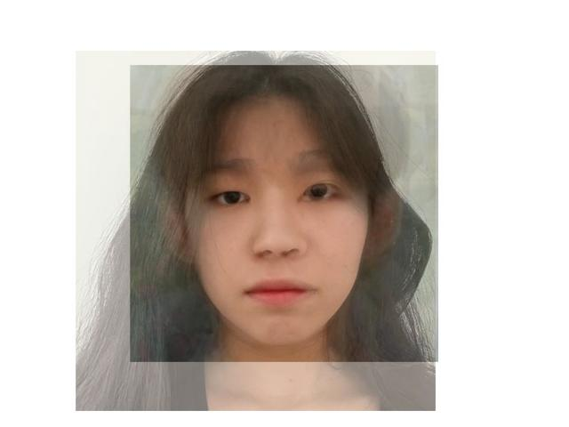
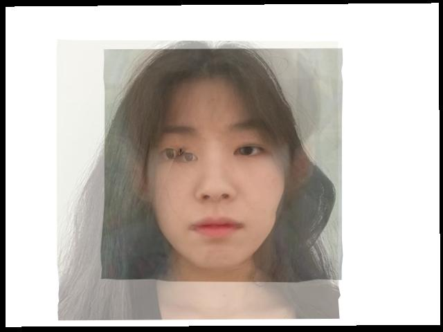
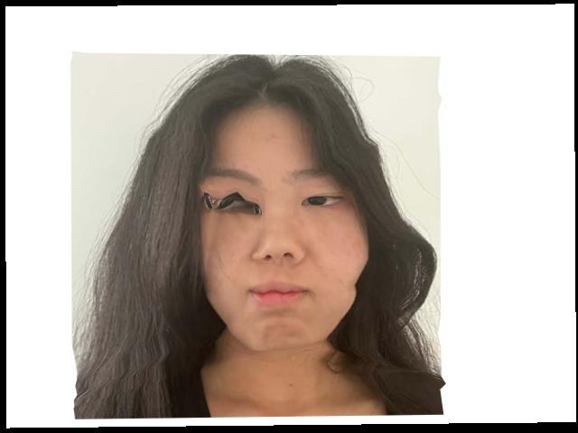